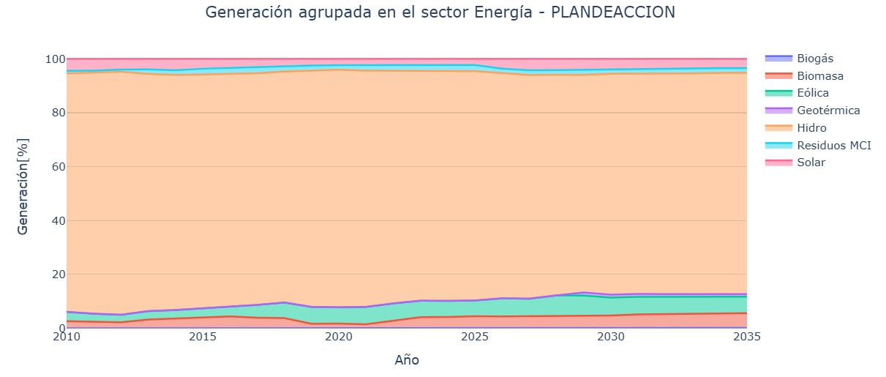

4.4. Resultados
La Figura 4.2 presenta las trayectorias de emisiones de GEI del sector Energía para el Escenario Tendencial Nacional (línea morada) y Escenario Plan de Acción del PLANMICC, Fase I (línea verde). La Figura 4.2 muestra una divergencia progresiva entre el Escenario Tendencial Nacional y el Escenario Plan de Acción del PLANMICC, Fase I, pues este último incorpora medidas de mitigación. El Escenario Tendencial Nacional presenta un aumento de las emisiones de GEI que parte en 37.000 kton CO₂-eq en 2010 y se proyecta hacia las 69.000 kton CO₂-eq en 2035. Por su parte, el Escenario Plan de Acción del PLANMICC, Fase I alcanza 49.000 kton CO₂-eq en 2035, manteniéndose consistentemente por debajo del Escenario Tendencial Nacional durante todo el horizonte 2025-2035, lo que refleja el efecto acumulado de las medidas de mitigación implementadas en el sector Energía. Los escenarios NDCINC y NDCCON correspondientes a las contribuciones incondicional y condicional de la Segunda NDC y se incluyen únicamente como referencias comparativas dentro de la Figura 4.2.

Figura 4.2 Trayectoria de emisiones de gases de efecto invernadero del sector Energía bajo distintos escenarios (2010–2035)
La Figura 4.3 muestra el porcentaje de generación eléctrica agrupada para el sector Energía en el Escenario Tendencial Nacional. La Figura 4.3 permite notar la participación relativa de cada fuente de energía en el período 2010–2035. Se observa que la generación hidroeléctrica prevalece en la matriz energética durante todo el periodo de análisis 2010-2035, manteniéndose cercana al 97% del total. En contraste, las demás fuentes de energía: solar, eólica, biomasa, biogás, geotérmica y residuos MCI contribuyen siempre por debajo del 6 %, incluso hacia el final del período de análisis (2035).

Figura 4.3 Participación porcentual de las diversas fuentes de energía renovable en la generación de eléctricidad – Escenario Tendencial Nacional (2010–2035)
En la Figura 4.4 se muestra la generación eléctrica agrupada del sector Energía en el muestra el porcentaje de generación de electricidad agrupada del sector Energía en el Escenario Plan de Acción del PLANMICC, Fase I, en el período 2010–2035. Se observa que la hidroelectricidad continúa siendo la principal fuente de generación durante todo el periodo de análisis (2010-2035), aunque su participación disminuye un 3% respecto al Escenario Tendencial Nacional. La contribución de hidroelectricidad en el gráfico disminuye desde valores cercanos al 93 % en los primeros años hacia alrededor del 81 % para el año 2035. Paralelamente en el año 2035, otras fuentes renovables incrementan gradualmente su contribución, a saber: solar, eólica, biomasa y geotérmica. Estas cuatro fuentes de energía aumentan su participación hasta situar su contribución en el 19 % para el final del período de análisis (2035).

Figura 4.4 Participación porcentual de las diversas fuentes de energía renovable en la generación de electricidad. – Escenario Plan de Acción del PLANMICC, Fase I (2010–2035).